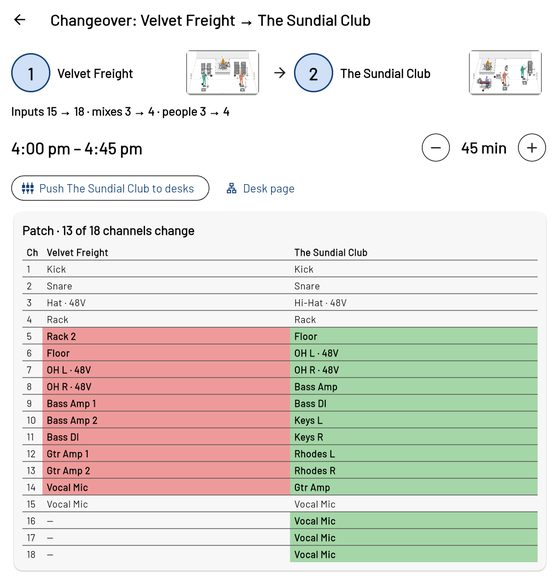
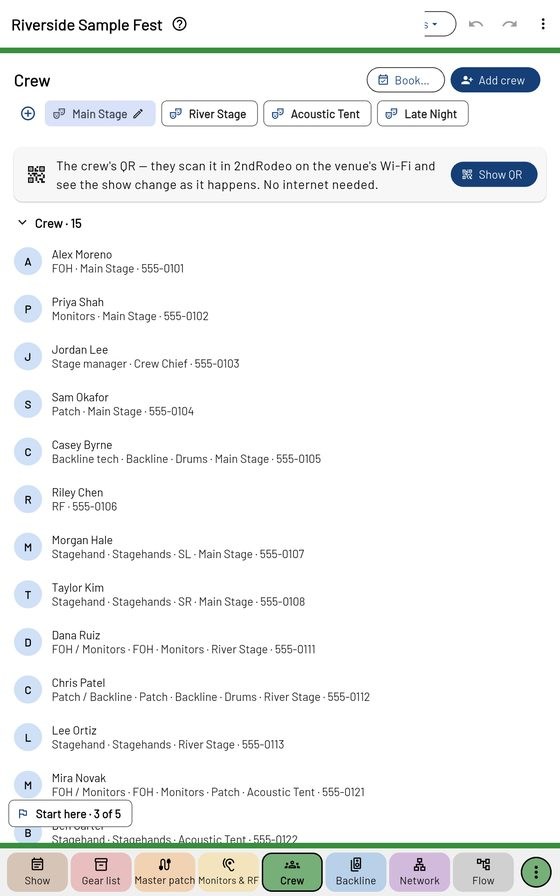

Changeovers and crew

A changeover
Tap a Changeover row between two acts. At the top: the two acts, their inputs, mixes and people, and − / + for its length. Push … to desks sends the next act's names to the desks.
The patch table lists every channel for both acts — red is leaving, green is arriving. Below it four cards, each with a small picture of the stage:
- Strike — comes off;
- Set — goes on;
- Move — stays but shifts, with an arrow and a dashed outline of where it was (risers roll too);
- Stays.
House backline shows as Bring out / Put away; a piece the house hasn't got is Short.
The Crew page

+ Add crew (name, title, phone, email, jobs, side, the stages they work), or ⋮ → Import a crew list… from a spreadsheet, CSV or pasted list. Call times are in the top bar.
The card at the top is the crew's QR: Show QR shares the show over the venue Wi-Fi (no internet needed). Crew scan it in 2ndRodeo; a phone's camera opens it in the browser, view only. The card says who has joined; Stop sharing asks first.
Book… texts each person a booking for the days you pick; they answer I'm in / Can't make it in 2ndRodeo, and their line shows "Fri ✓ · Sat ✗".
Changeovers as crew jobs
Further down, each changeover is a block of jobs by section — FOH, Monitors, Patch, RF, Backline, Drums, Stagehands — in the order they're done, with how long it should take. Start starts it early; Stage ready ends it — after three changeovers the times follow your crew's own speed. The out (the house's PA, lights and stage) is its own block at the end of the last day.
⋮ → Crew sheets prints or texts each person their own list, with their own live link.